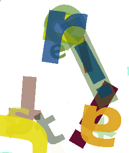
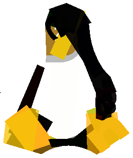
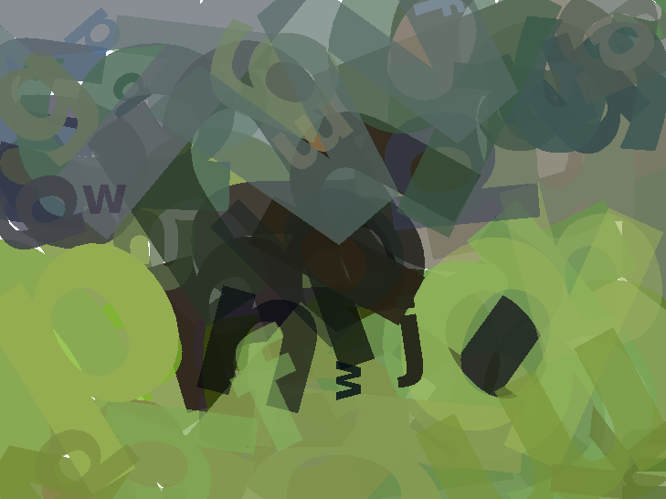
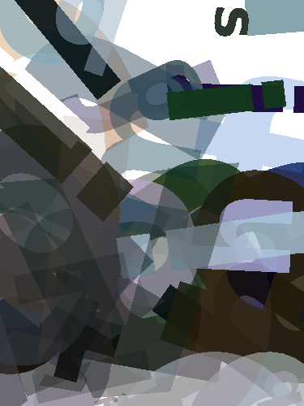
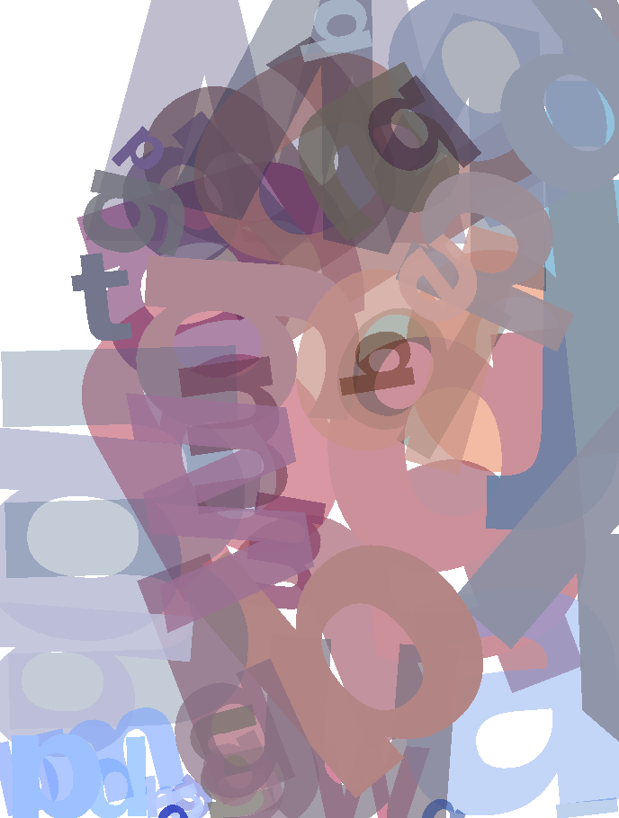

AI Odyssey 2012
Challenge 1: ASCII Art
In the first challenge we were tasked with recreating given input images using a given amount of letters that could be given a colour, size, position and rotation.
I came up with a two possible ways of tackling the problem. The first technique would be trying to place letters one by one, trying to find an optimal place for each single. I thought an algorithm like gradient descent might do the job well enough.
The way I ended up solving the problem was a simple evolutionary algorithm like the one mentioned here. The algorithm has the following steps:
- Make a random list of letters
- Make some copies of the list of letters generated and randomize some letters in them
- Take the one with the smallest distance to the source image and go to step 1
I mainly chose this algorithm over the first one because I was lazy and this seemed like less work. The first thing I noticed was that the cost function took way too long to compute. Something had to be done. I found two possible ways to fix this. Either I could scale down the images in the beginning and scale the letters to match the size of the source image or I could simply compare only a few of the pixels when calculating the cost. Resizing the image gave somewhat a bigger boost but as I couldn't have been bothered with scaling the letters back to the input size, I went with the second approach which turned out to be fast enough.
After playing around with my first version of this algorithm for a night using Tux as the source I was ready to conclude that it could only produce heaps of letters that were somewhat clumped in the middle of the picture.
I was pretty stuck for a while. The Mona Lisa article seemed to use an algorithm identical to mine for the parts that mattered and I had run the algorithm for quite many cycles but my results were awful. So I did what any reasonable person would do. I decided to make my code parallel and run it with more iterations, after all, the Mona Lisa was evolved from triangles, not letters so the search space would have been smaller.
After figuring out how to get my generations generated in parallel and tweaking my letter randomization algorithm so that it gave me letters within reasonable bounds I left ukko137 to compute 700 000 generations of size 16 for the night and got the result on the left.
This was the first image of tux that I created that was good enough to pass the given requirement. But more importantly, it told me what was wrong. I was mutating lists of letters by swapping some letters with totally random ones. It was the easiest thing to do but It meant that after a letter had found decent parameters, it was quite unlikely for a random letter to be swapped in its place. What I had to do was make the mutation alter the letters instead.
After I had gotten my letter alteration method working and squashed an unbelievable amount of silly bugs I had to find good parameters so that the algorithm would converge fast in the beginning but wouldn't get stuck later on. I made a few plots of how the evolution progressed but I didn't have the patience for systematically making plots with different parameters run times long enough to be too informative but I did make some observations.
I found that giving the image one mutation at a time gave results superior to giving it many. I also found that, although it's a good idea to begin by making larger mutations, the size of the mutations should not be lowered very low at any point or the algorithm will get stuck.
After I had tweaked the algorithm I was able to surpass my earlier rendering of tux in only 1,5 minutes instead of the 7 I used earlier. Now I felt confident enough to leave the ukko cluster to run my program for the night and go to sleep. In the morning I was greeted by the following pictures, all of which passed with descent scores.
   